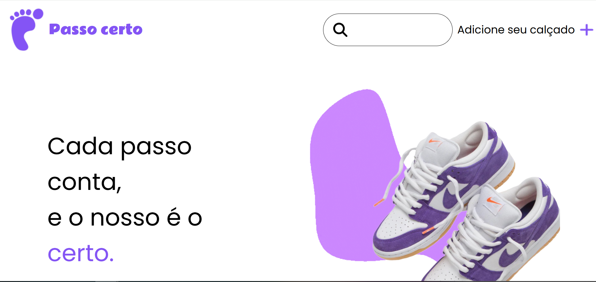
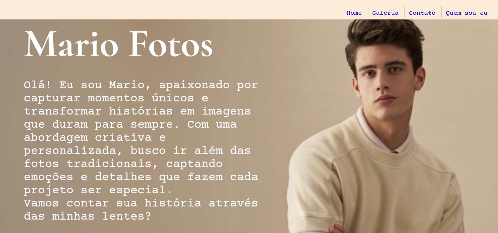
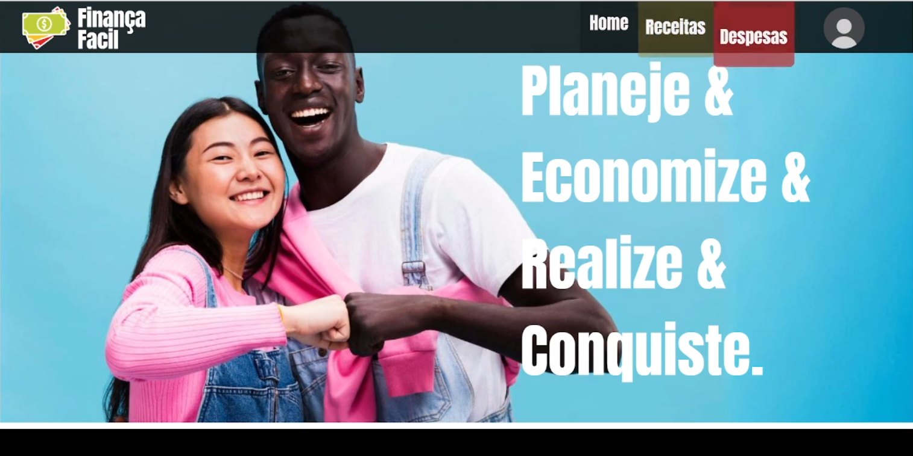

Olá! Eu sou Tharic, um estudante de Desenvolvimento de Sistemas no SENAI "Avak Bedouian". Tenho 16 anos, e sou apaixonado por estimular meu pensamento criativo, e utilizar isso da melhor forma em meus vários projetos feitos ao longo de 1 ano de Curso Técnico.
Sou uma pessoa que adora explorar novos lugares, descobrir culturas diferentes e me perder em livros. Tenho uma paixão por design e tecnologia, e sempre estou em busca de algo novo para aprender. Gosto de momentos tranquilos, como uma boa xícara de café enquanto vejo o pôr do sol, mas também adoro desafios e projetos que me tiram da zona de conforto. Além disso, sou alguém que valoriza as pequenas coisas da vida, como uma boa conversa ou um sorriso inesperado no meio do dia.
O projeto consiste no desenvolvimento de um site para a fábrica de calçados "Pé na Moda", com o objetivo de facilitar o gerenciamento do catálogo de produtos. Utilizando HTML, CSS e JavaScript, foi criada uma interface responsiva e intuitiva, permitindo que o proprietário, João, adicione, edite e remova produtos de forma simples. A aplicação busca melhorar a experiência de gestão do estoque e atender à crescente demanda de seus clientes, com um design adaptado para dispositivos móveis e fácil de navegar, mesmo para quem não tem familiaridade com tecnologia.
 Link para o projetoO projeto consiste no desenvolvimento de um site para um fotógrafo, com o objetivo de apresentar seu portfólio de forma atrativa e funcional, além de facilitar o contato com potenciais clientes. Utilizando HTML, CSS e JavaScript, o site conta com uma galeria de fotos para exibir o trabalho do fotógrafo, uma seção com a biografia do artista, um formulário de contato e informações de contato como e-mail, telefone e links para redes sociais. O design é responsivo e adaptável a diferentes dispositivos, com uma navegação intuitiva, garantindo uma boa experiência para os visitantes. O site foi desenvolvido com foco em estética, funcionalidade e eficiência, atendendo às necessidades do público-alvo e ao objetivo do fotógrafo.
 Link para o projetoO projeto visa o desenvolvimento de um site de controle financeiro para ajudar os usuários a gerenciar suas finanças pessoais de forma prática e eficiente. Realizado por uma turma de estudantes de tecnologia, o site foi criado para oferecer uma ferramenta educativa e acessível, com funcionalidades que incluem o cadastro de receitas e despesas, além de um resumo financeiro que mostra o saldo atual. Utilizando Figma para o design e HTML, CSS e JavaScript para a construção do site, o projeto incentivou a colaboração em equipe, o desenvolvimento de habilidades técnicas e a criatividade dos alunos, ao mesmo tempo em que promoveu o ensino de conceitos básicos de finanças pessoais, com foco em usabilidade e design intuitivo.
 Link para o projetoQuer falar comigo? Me envie uma mensagem através do formulário abaixo: